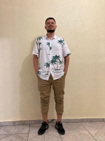

Quem sou eu?
Meu nome é Bruno Vinicius Kmiecik. Sou formado em técnico de Recursos Humanos mas a minha maior área de atuação é em Financeiro e Contabilidade desde 2014. Atualmente atuo como analista de risco em uma gerenciadora de risco de transporte logistico. Ainda estou na busca do que realmente quero para meu futuro profissional, mas acredito que a área de Tecnologia tem me chamado mais atenção. As aulas do professor Gustavo Guanabara tem me inspirado e despertado curiosidade em saber mais.
Das coisas que mais gosto de fazer, uma delas com certeza é assistir e falar sobre futebol, me reunir com amigos em bares e ver a gata (Emy) que já estou com muita saudade <3.
Como falar comigo?
 Instagram: /brunokmiecik - Me segue lá no Instagram
Instagram: /brunokmiecik - Me segue lá no Instagram Twitter: /BVKmiecik - Me segue lá no TT
Twitter: /BVKmiecik - Me segue lá no TT Facebook: /Bruno Vinicius - Me adiciona lá no Facebook
Facebook: /Bruno Vinicius - Me adiciona lá no Facebook
Abaixo deixei alguns vídeos legais para assistir, nas quais eu gosto muito. Dê uma olhadinha:


Obrigado pela oportunidade de me conhecer um pouco mais e volte sempre!